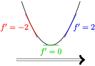

Chapter 13 Dimishing Returns and Changing Rates
Section 13.1 The Second Derivative
Recall that if \(P(x)\) is total profit, then it's slope function \(P'(x)\) is used to approximate the profit from the next item.
The concept of diminishing returns plays an important role in economics.
-
To the left of the point of diminishing returns, the slope is increasing.
That means that each item contributes more and more to the total profit. In other words, returns are accelerating.
-
To the right of the point of diminishing returns, the slope is decreasing.
That means that each item contributes less and less to the total profit. In other words, returns are decellerating. At first, the items increase the profit, but by less and less. Eventually, the items cause the profit to decrease.
Most descriptions in economics of diminishing returns are very wordy, and somewhat vague. To make this concept precise, we need an additional mathematical concept.
Definition 13.1.
Suppose that \(f\) is a differentiable function. The second derivative of \(f\text{,}\) written \(f''\text{,}\) is a function that gives the slope of \(f'\). In symbols,
In practice, find the second derivative by finding the derivative of the derivative.
In physics,
If \(s(t) = \) position
then \(s'(t) = \) velocity
and \(s''(t) = \) acceleration.
Exploration 13.1.
Suppose that \(P(x) = -0.1x^2 + 30x - 1000 \text{.}\)
(a)
Find the marginal profit from items #10, #11, and #12.
The marginal profit function is \(P'(x)\)
The marginal profit function is equal to \(P' = -0.2 x + 30 \text{.}\) This tells us how much the next item contributes to the total profit.
Notice that the 10th, 11th, and 12th items all increase the total profit. However, they contribute less and less to the total profit. In fact, the addional profit is decreasing by $0.20 every additional item.
(b)
Find \(P''(x)\)
We have already found \(P'(x)\text{.}\)
We can now find the second derivative
This tells us that the unit profit is decreasing by $0.20 $/item for each additional item sold.
Exploration 13.2.
Let \(f(x) = \dfrac{3}{2x+1}\) is the position function. Find the acceleration \(\dfrac{d^2f}{dx^2}\text{.}\)
We must take the derivative twice.
You can find this derivative as written using the quotient rule. You can also rewrite the derivative as \(\ddx{ 3\cdot(2x+1)^{-1}}\) and use the chain rule.
We will use the quotient rule \(\D{\frac{\red{t}}{\blue{b}}} = \frac{\blue{b}\red{t'}-\red{t}\blue{b'}}{\blue{b}^2}\)
We can now take the derivative the second time, also using the quotient rule
Understanding Acceleration.
A physical perspective provides one of the most straightforward ways to think about the connection between position, velocity, and acceleration. To make things concrete, suppose that you are driving on a highway, and that
If \(s(t) = \) your mile marker at time \(t\)
then \(s'(t) = \) is your velocity at time \(t\)
and \(s''(t) = \) your acceleration at time \(t\text{.}\) This tells us how fast the velocity \(s'\) is changing.
In other words,
Positive acceleration \(s''\) means that velocity is increasing. This happens when you put your foot on the gas, as long as the car is in drive.
Negative acceleration \(s''\) means that your velocity is decreasing. This happens when you put your foot on the break, as long as you are moving forward.
Exploration 13.3.
Suppose that your velocity is given by the following table
| \(t\) | 0 | 1 | 2 | 3 | 4 | 5 |
| \(s'(t)\) | 60 | 65 | 85 | 30 | 10 | 0 |
(a)
On what interval is your acceleration \(s''\) positive? Justify your answer
Positive acceleration means increasing velocity. The velocity increases between \(t=0\) and \(t=2\) (the velocity increases from 60 to 65 to 85).
That means that acceleration is positive between \(t=0\) and \(t=2\text{,}\) which corresponds to the interval \((0,2)\)
(b)
On what interval is your acceleration \(s''\) negative? Justify your answer
Negative acceleration means decreasing velocity. The velocity decreases between \(t=2\) and \(t=5\) (the velocity increases from 85 to 30, to 10, to 0).
That means that acceleration is negative between \(t=2\) and \(t=5\text{,}\) which corresponds to the interval \((2,5)\text{.}\)
Example 13.2. Finding Maximum and Minimum Velocity.
The above examples show that the velocity function \(f'\) has a maxmium or minimum value when the acceleration goes from \(f''=(+)\) to \(f''=(-)\) (for a maximum velocity \(f'\)) or from \(f''=(-)\) to \(f''=(+)\) (for a minimum velocity \(f'\)).
Section 13.2 Concavity and Graphs
In Chapter 12, we used the derivative function \(f'\) to give a very rough sketch of a height function \(f\text{.}\) However, this sketch is only a partial description of the original function.
For example, the following graph is more than just the sketch \(\nearrow\,\searrow\)
In particular, the graph first curves up, then curves down, and then curves up again.The term concave means "curved like a bowl." In our context, there are two kinds of bowls: ones that open up, and ones that open down. Graphically, you can tell if a curve is concave up by putting eyes over the curve, and seeing if it is \(\stackrel{\cdot\,\cdot}{\smile}\) or \(\stackrel{\cdot\,\cdot}{\frown}\)
- Concave Up
-
The curve opens up
The slope \(f'\) is increasing
Because \(f'\) is increasing, the second derivative \(f''\) is positive.
- Concave Down
-
The curve opens down

The slope \(f'\) is decreasing

Because \(f'\) is decreasing, the second derivative \(f''\) is negative.
We can summarize this as the following result.
Theorem 13.3.
Suppose that \(f\) is a function with second derivative \(f''\text{.}\)
\(f\) is concave up on an interval if and only if the second derivative \(f''=(+)\) on that interval.
\(f\) is concave down on an interval if and only if the second derivative \(f''=(-)\) on that interval.
Something interesting happens when concavity changes. Suppose the bell curve below represents the number of people ill with a new illness. In the bell curve below, the curve starts out concave up (CU), becomes concave down (CD), and ends concave up (CU).
-
At the first "bending point," the number of new cases continues to rise. However, the daily change in cases (i.e. the slope \(f'\)) stops getting bigger and starts getting smaller.
In other words, because the second derivative goes from \(f''=(+)\) to \(f''=(-)\text{,}\) the fastest daily change in cases occurs at the first bend in the curve.
At the second "bending point," the number of new cases continues to decrease. However, the daily change in cases (i.e. the slope \(f'\)) starts to decrease less rapidly.
This is an important mathematical feature, but "bending point" does not a mathematical term. The word inflect means to bend, to change pitch, or to alter noticeably.
Definition 13.4.
Suppose that \(f\) is a function with second derivative \(f''\text{.}\) We say that \(f\) has an inflection point at \(x\) if and only if \(f\) changes concavity at \(x\text{.}\)
In other words, \(f\) has an inflection point at \(x\) if \(f''\) goes between \((+)\) and \((-)\) at \(x\text{.}\)
To Find Intervals of Concavity.
-
Find an equation for \(f''\text{.}\)
If you are given an equation for \(f\text{,}\) take the derivative twice. If you are given an equation for \(f'\text{,}\) take the derivative once. If you are given an equation for \(f''\text{,}\) no derivative rules are needed.
Find all \(x\) such that \(f''(x)=0\text{.}\)
Find all \(x\) such that \(f''(x)\ DNE\)
Make a sign chart for \(f''\)
Read off your answer. If \(f''=(+)\text{,}\) then \(f\) is \(\stackrel{\cdot\,\cdot}{\smile}\text{.}\) If \(f''=(-)\text{,}\) then \(f\) is \(\stackrel{\cdot\,\cdot}{\frown}\text{.}\)
Exploration 13.4.
Let \(f(x) = x^3 - 9x^2 + 24x - 3 \) be a function that gives the height of a mountain.
(a)
Find where \(f\) is concave up, where it is concave down, and find all inflection points.
To find concavity and inflection points, we must work with the second derivative \(f''\text{.}\) First, we must find \(f''\text{.}\)
Next, find when \(f''=0\) by solving
Because \(f''\) is a polynomial, it is defined on all \(x\text{.}\) In other words, there are no \(x\) that make \(f''\ DNE\)
Next, make a sign chart for \(f''\) as before, checking whether \(f''\) is positive or negative on each interval.
Using our graph, we see that the function is concave up on the interval \((3,\infty)\text{,}\) it is concave down on the interval \((-\infty,3)\text{,}\) and has a point of inflection at \(x=3\text{.}\)(b)
Find all local maxima and minima.
To find maxima and minima, we must work with the first derivative \(f'\text{.}\) We have already found that \(f'(x) = \ddx{x^3 - 9x^2 + 24x - 3 } = 3x^2 -18x +24 \text{.}\)
Next, we must find when \(f'=0\) by solving the equation
\(f'=0\) if and only if \(x=4\) or \(x=2\text{.}\)
Because \(f'\) is a polynomial, it is defined for all \(x\text{.}\) In other words, there are no places where \(f'\ DNE\text{.}\)
We now make a sign chart for \(f'\) as usual.
Exploration 13.5.
Suppose that \(f\) is an unknown (mystery) function with known acceleration function
(a)
Find where the original function \(f\) is concave up or down.
You are given the formula for the derivative \(f''\text{,}\) so you do not need to do any calculus.
Recall that for fractions, \(\frac{A}{B}=0\) if and only if \(A=0\text{,}\) and \(\frac{A}{B}\ DNE\) if and only if \(B=0\)
To find when \(f''=0\text{,}\) solve the equation
which happens when \(x=-2\) or \(x=7\text{.}\)
To find when \(f''\ DNE\text{,}\) solve the equation
which happens when \(x=0\)
Using these values, we can make the sign chart as before
Using the sign chart, we see that the original/mystery function \(f\) is concave up on the interval \((-\infty,-2)\cup(7,\infty)\text{.}\) \(f\) is concave down on the interval \((-2,0)\cup(0,7)\text{.}\)
There are inflection points (the curve bends) at \(x=-2\) and \(x=7\text{.}\)
We can combine all of the techinques we have used in the past section into a single problem.
Exploration 13.6.
Let \(f(x) = \frac{1}{5}x^5 - x^4\text{.}\)
(a)
Find all maxima and minima for \(f\text{.}\)
\(f'=0\) if and only if
\(f'=0\) if \(x=0\) or \(x=4\text{.}\)
\(f'\) is a polynomial so there are no values where \(f'\ DNE\text{.}\)
(b)
Find all intervals of concavity for \(f\text{.}\)
\(f''=0\) when
\(f''=0\) when \(x=0\) or \(x=3\)
\(f''\) is a polynomial, so it is always defined. Making the sign chart for \(f''\) gives.
The original function \(f\) is concave up on the interal \((3,\infty)\text{.}\) The function \(f\) is concave down on the interval \((-\infty,0)\cup(0,3)\text{.}\)Section 13.3 The Second Derivative and Change Graphs
So far, we've seen that if \(f(x)\) is a function that represents a total amount of something, then the derivative function \(f'(x)\) tells us how fast that total is changing.
We have also seen that simply computing the change function \(\Delta y\) gives a nice discrete analog of the derivative.
We have recently begun studying the second derivative. Recall that \(f''(x)\) tells us how fast the slope of our function is changing.
As it turns out, we can get a discrete analog of the second derivative by computing the change in \(\Delta y\text{.}\) We might call the “change in the change” function \(\Delta^2 y\) , since it involves finding two different changes.
Exploration 13.7.
| day (\(x\)) | 0 | 1 | 2 | 3 | 4 | 5 | 6 | 7 | 8 | 9 | 10 |
| \(P\) | |||||||||||
| \(\Delta P\) | N/A | ||||||||||
| \(\Delta^2 P\) | N/A | N/A |
What is the change in value \(\Delta P\) due to the 2nd, 4th, and 6th items?
When is the function changing the fastest and slowest?
Which items contribute the maximum value? Which items contribute the minimum value?
How fast is the value changing between items 1 and 2? What about between items 2 and 3?
Fill in the remainder of the table above.
Exercise: Let \(P(x) = 0.1x^3 -1.4x^2 + 4.5x - 1\) be a function that describes the total profit as a function of the number of units \(x\) to be sold.
| day (\(x\)) | 0 | 1 | 2 | 3 | 4 | 5 | 6 | 7 | 8 | 9 | 10 |
| \(P\) | |||||||||||
| \(\Delta P\) | N/A | ||||||||||
| \(\Delta^2 P\) | N/A | N/A |
Fill in the table above describing the total profit \(P\text{,}\) the change in profit \(\Delta P\text{,}\) and the change in the change of profit \(\Delta^2 P\text{.}\) Then sketch graphs of all three functions.
For what intervals of \(x\) is the change in profit \(\Delta P\) increasing? For what intervals of \(x\) is \(\Delta P\) decreasing?
When is \(\Delta P\) changing the fastest? How is this related to \(\Delta^2 P\text{?}\)
Exercise: Let \(P(x) = -0.6x^2 + 3x - 1.4\) be a function that describes the total profit as a function of the number of units \(x\) to be sold.
| day (\(x\)) | 0 | 1 | 2 | 3 | 4 | 5 |
| \(P\) | ||||||
| \(\Delta P\) | N/A | |||||
| \(\Delta^2 P\) | N/A | N/A |
Fill in the table above describing the total profit \(P\text{,}\) the change in profit \(\Delta P\text{,}\) and the change in the change of profit \(\Delta^2 P\text{.}\) Then sketch graphs of all three functions.
For what intervals of \(x\) is the change in profit \(\Delta P\) increasing? For what intervals of \(x\) is \(\Delta P\) decreasing?
What does the fact that \(\Delta^2 P\) is constant tell us about the graph of \(P\text{?}\) What does this say about the relationship between the total profit function \(P\) and the various possible numbers of items \(x\) that you might intend to sell?